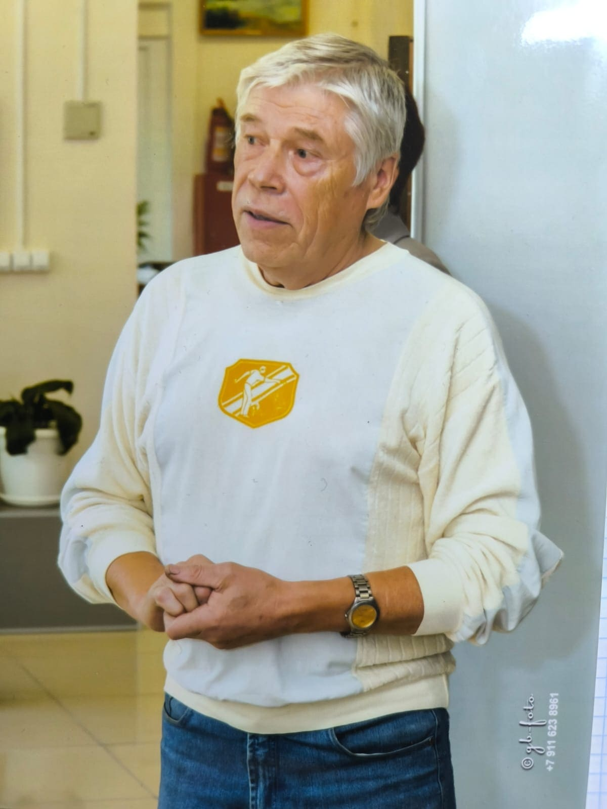
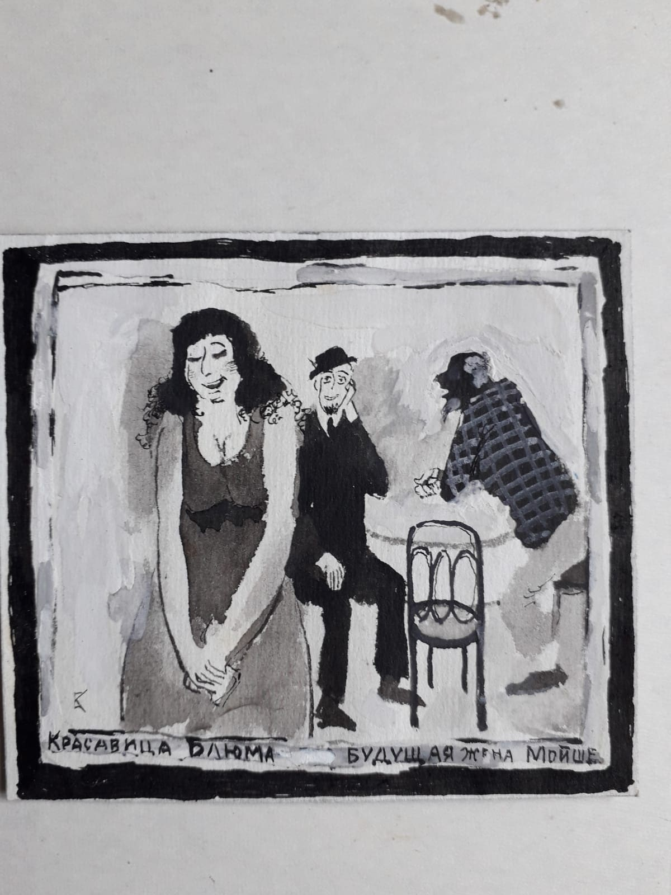
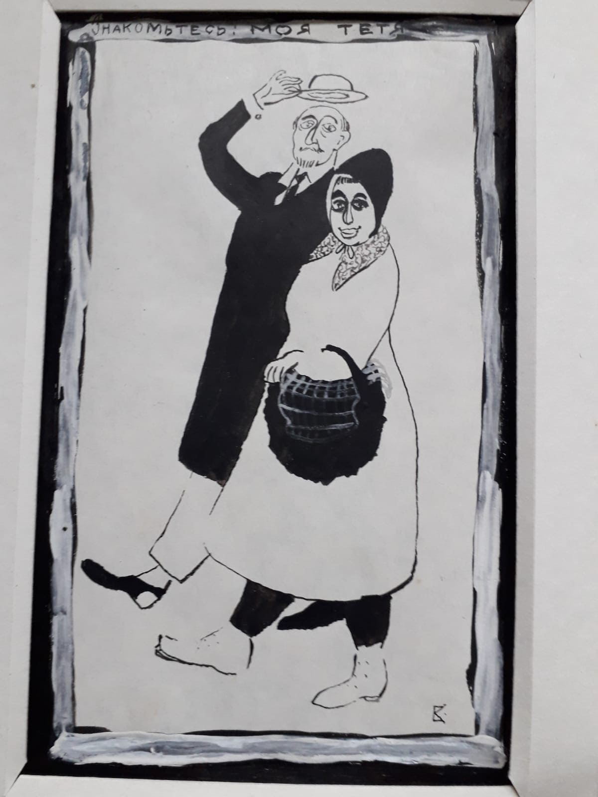
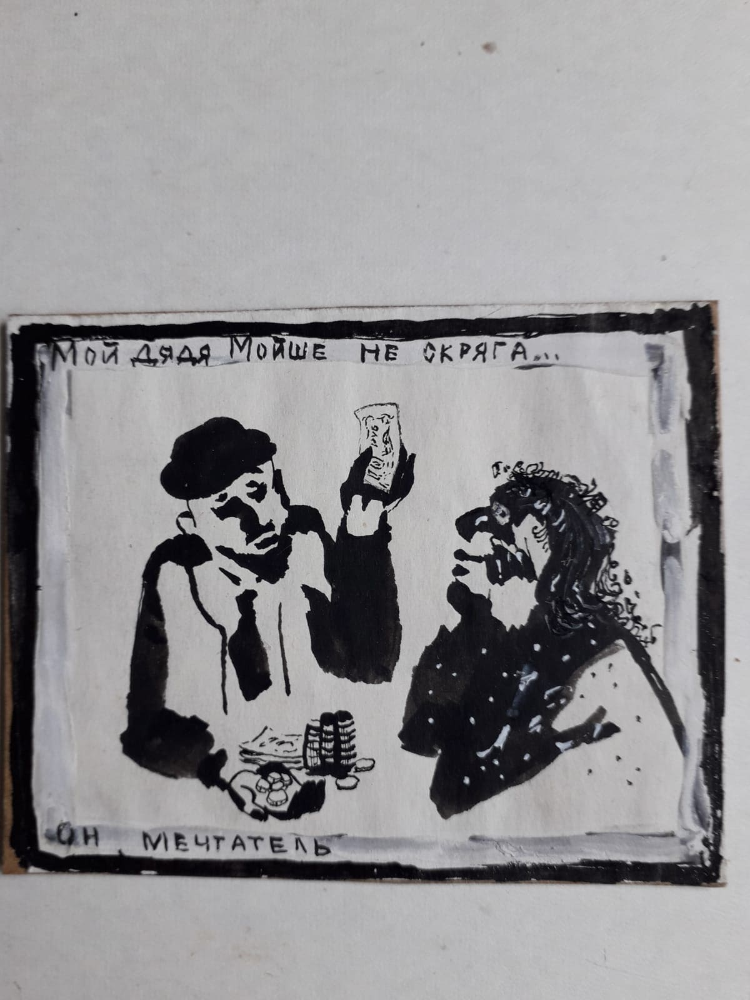
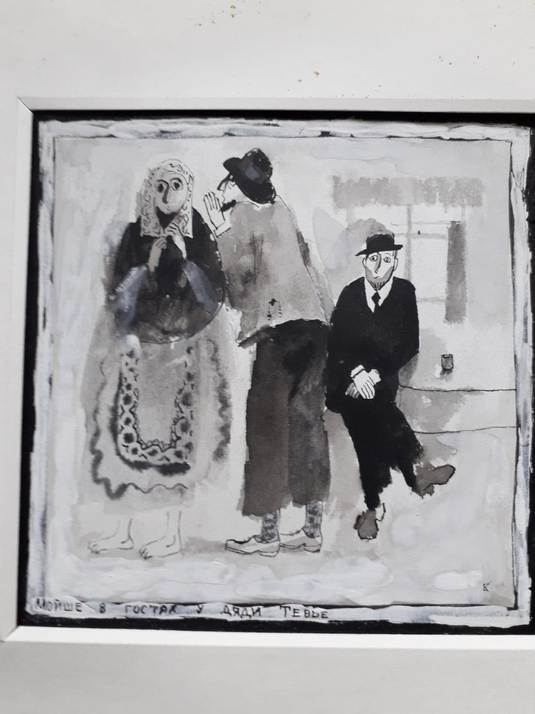
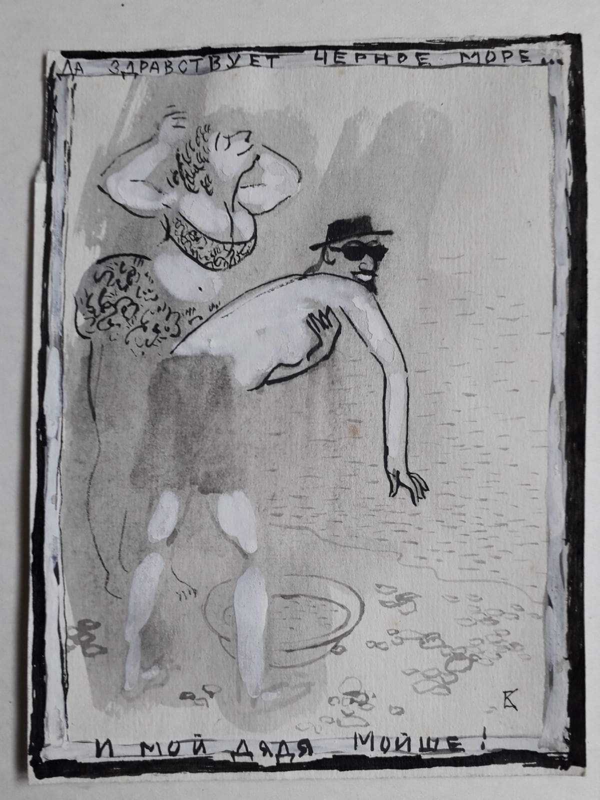
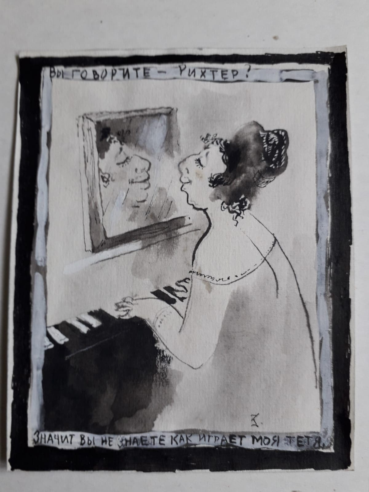
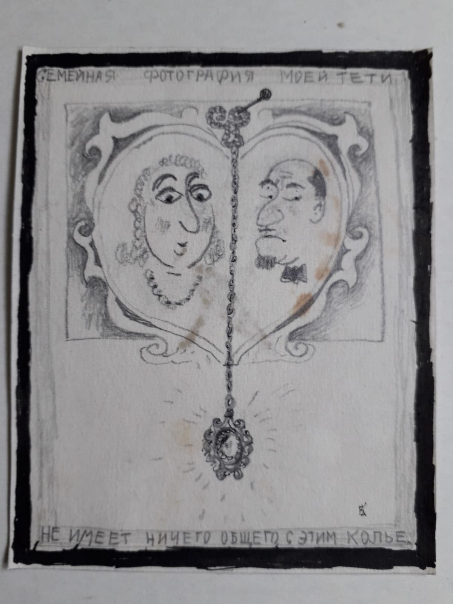
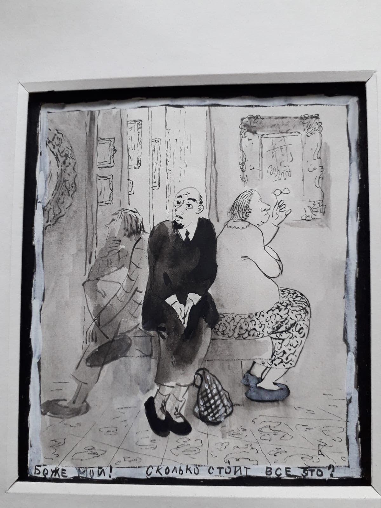
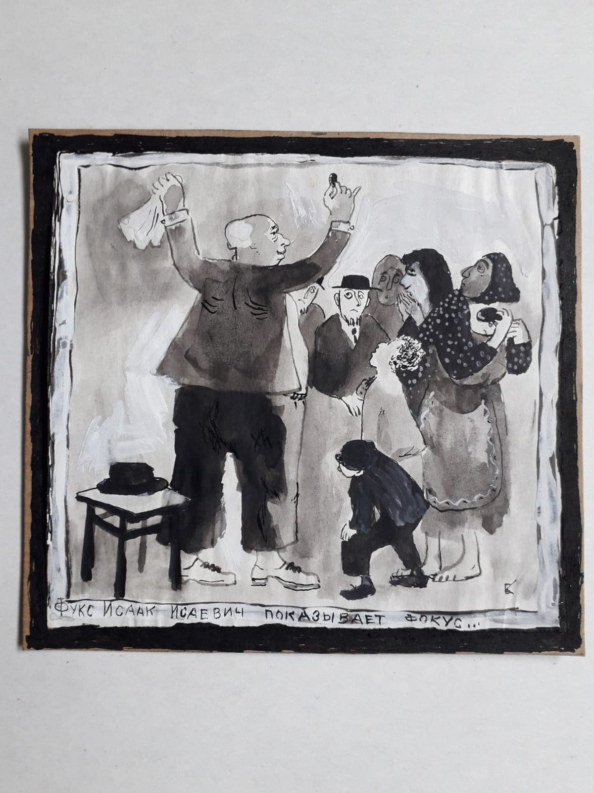

О художнике: Валерий Павлович Кондаков (псевд. Ewi Enk) родился в 1947 г. В 1978 г. окончил Дальневосточный институт искусств, факультет живописи в г. Владивостоке. Живет и работает в п. Нижнеангарск на севере Байкала. На сегодня не является членом Союза Художников, не имеет ни званий, ни наград, ни судимости. В живописи работает в двух направлениях:
1) Человек как эстетически-философское, материализованное нашим временем создание.
2) Проявление архаики и современного влияния на коренные народы Сибири, взглядом эвенка.
На уроках рисования учитель физики ставил обычно графин и строго говорил: рисуйте! И все рисовали. В том числе и я. Однажды я в этом графине нарисовал портрет на корточках этого учителя физики. Получился он очень похожий. Но учителю физики не понравилось, он при всём классе демонстративно порвал на мелкие кусочки рисунок, и потом куда-то исчез. А вместо него появился учитель труда. Он ставил на стол табуретку и строго говорил: рисуйте! Я и учителя труда нарисовал маленьким, стоящим на табуретке с топором в одной руке, другой рукой он показывал на окно, в котором такой же похожий на него, учитель труда, тоже стоя на табуретке, показывал ему кукиш.
Через несколько дней меня привели к директору школы. Он держал в руках тетрадку и грозно кричал: это што, я спрашиваю?! Тетрадка — отвечаю. Нет, ты дурачка из себя не корчи! Это што, ещё раз спрашиваю!!! Тетрадка — отвечаю.
Но интересно вот что: с этого момента я вдруг почувствовал невероятное, необъяснимое, неземное — во мне начало просыпаться бурно, радостно, великолепнейшее чувство Художника. Я увидел бешеные глаза на выкате, почти без зрачков. Рядом — тень щупленькой, старой закалки учительницы, теребящей дрожащими пальчиками платочек, открывшиеся от этой сцены рты аудитории учителей… И незнакомое слово «Образы» — сверкнуло молниями в голове. И да. Так до сих пор я ищу и сотворяю образы.

18.09.2010 г. Валерий Кондаков, персональной выставке на открытие галереи в Северобайкальске.
«Интересно то, как художник выбирает тему для своей цели. Это может быть и поверхностно, и глубоко, и слащаво, сурово, на заказ... на подработку. Главное при этом не забывать, что ты имеете дело с искусством. Искусство же не терпит фальши. И еще, искусство не есть корзина, на которой можно таскать удовольствие, славу и ждать припеваючи, но отдаться искусству нужно честно. Тогда результат придет рано или поздно. Примерно в таком ключе я и работаю. Это мой принцип. Никого не осуждая, не завидуя, не ставя подножки.»
Выставки
1979
Всероссийская выставка «Мы строим БАМ», Улан-Удэ, Музей Сампилова
1980
Пятая Всесоюзная выставка акварели, Москва, ЦДХ
1990
Ассоциация Сибирских городов — Сибирская международная ярмарка, Новосибирск
1990
Седьмая Зональная выставка «Сибирь и Дальний Восток», Якутск
2002
Выставка Бурятского отд. С/Х, Улан-Удэ
2007
Персональная выставка в Доме Художника Красноярского отд. С/Х
2008
Омский областной музей им. Врубеля, Омск
2008
«Сибирский миф» — Групповая выставка «Маски» голоса территорий, ГРМ, Санкт-Петербург
2008
Десятая Региональная выставка «Сибирь», Новосибирск
2010
Международная выставка «След» — «Хронотоп», Отд. Российской Академии художеств, Красноярск
2011
Групповая выставка «Маски», Дом Художника, Красноярск
2011
Персональная выставка графики в эвенкийском музее, Улан-Удэ
2012
Персональная выставка графики, Красноярск
2019
Персональная выставка, Немецко-русский центр культуры, Дрезден
2025
Союз Художников, Санкт-Петербург, Большая Морская, 38
Работы
Картины маслом
Безвинно богоборцами убиенным 107x93 х.,м. 2025г.
А зато для вида мы сегодня — вот, посмотрите — лелеем собачек, кошечек...
-А для какого вида?
-Так положено, хотя извините, этого вида, каким он был, уже нет и не будет вероятно-с,
или кто его знает?...
Только погребённый уже не полнится никакими грехами. Душа его вознеслась. И больше не имеет никакого отношения к Земному.
Илия Пророк в пустыне 88x113 х.,м. акр.фольга 2024г.
«Но говорю вам, — сказал Иисус: Илия уже пришёл, и не узнали его.» И да. Пустота сердец наших, человечьих, и есть пустыня.
Кредитная история 91x112 х.,м. 2001г.
«Кредиты... В общем-то это мелочь по сравнению с тем, что у тебя могут запросто отобрать цель жизни.
Любовь 102x101 х.,м. 2001г.
Возлюбив, научите летать, но не ползать.
Мыльные пузыри 100,5x96 х.,м. 2024г.
А кто, скажите, не любит прекрасного? А уж как прекрасно, профессионально лжёт Лукавый!
Одиночество 90,5x115 х.,м. 1998г.
И драгоценный бриллиант в сотни карат, брошенный в болото, будет не нужен в своём одиночестве даже лягушкам. А что уж говорить о человеке, если он потерял себя...
Приходите на спектакль 71,5x122 х.,м. 2017г.
У нас каждый день спектакли, в разных ипостасях, на разные голоса. Правда, маловато лёгкого, искренне душевного, благожелательно-наивно-светло-очаровательно-легкомысленного, что-ли.
Революция 45,5x47 х.,м. 2002г.
Хотелось лучшего, а получилось... Наверно, всё оттого, что Благоразумие и Тупоумие ходят по одной стороне улицы, а поют осанну разным богам.
Рождение эпохи 102x124 х.,м. акр. 2025г.
И ведь не дано знать, что вылупится из этого эпохального яйца, но жизнь продолжается... Слышите, горнист победные звуки издаёт?
Иллюзионизм — ветвь философии о призрачности, обманчивости мира и мира будущего. Но человечеству, увы, хочется обманываться.
Смирение 82x83 х.,м. 2002г.
Можно устать. Отдохнув, подняться. Но «Совершенствуйтесь!» — призвал Господь. А можно примириться с усталостью, смириться со злом. Быть рабом, чтобы оправдывать свою судьбу. Это так легко.
Соблазн 87x110 х.,м. 2001г.
Ну, не скажите... Наш мозг более чем изворотлив. Думается мне: он всегда таким был.
Случайно натыкаешься на чердаке на давно забытое фото предка и... возникает обиднейшее чувство, что ты чего-то не успел в своё время, а оно ушло... И никогда не вернётся, чтобы успеть...
Страх 59x63,5 х.,м. 2009г.
Самый большой страх — за безвозвратную потерю того, ради чего жил.
Художник А.Гарбузов 64x48 х.,м. 2005г.
И художники, и не художники что-то оставляют после себя. Иные ничего не оставили, но прожили жизнь недурно. И этого достаточно, дабы не оставлять после себя плохое.
Чистый лист бумаги 84x66 х.,м. 1998-2020г.
«Итак, пожалуй, начнём» — сказала Жизнь и положила чистый лист бумаги перед младенцем.
Яблочко, Гости из НЭПа 95x125 х.,м. 1983-2023г.
«Это не я сказал, это древние утверждали: многое может возродиться из того, что уже умерло. Я согласен с ними.
Миниатюры тушью
Это серия миниатюрных рисунков. Посвящается она светлой памяти моей тёти - Дины Лазаревны Флеер-Поповой. Создал я рисунки на 2 курсе института, за что был награждён ректором Вениамином Алексеевичем Гончаренко повышенной стипендией и денежными вознаграждениями к праздникам на всё время обучения. Это было в 1975г. Ужас! 50 лет прошло с тех пор! А тонкие особенности характера, сиюминутность и в то же время какая-то крепкая исконность, ирония, граничащая с милым юмором - они и сегодня читаются в этих миниатюрах. Большинство из них исчезло.
Рисунки перекликаются с героями Шолома Алейхема, с бытность во времена моего детства, ну и с воображаемым пространством представлений о человеке.
Техника исполнения: тушь, размывка, перо, белила.
Год создания: 1975г.

Красавица Блюма будущая жена Мойше. 8.8х9.8

Знакомьтесь: моя тётя. 15.5х9.6

Мой дядя Мойше не скряга... Он мечтатель. 7х8.8

Мойше в гостях у дяди Тевье. 14.5х14.4

Да здравствует Черное море... и мой дядя Мойше! 12.6х9.5

Вы говорите - Рихтер? Значит, вы не знаете, как играет моя тётя. 12.6х10.1

Семейная фотография моей тёти не имеет ничего общего с этим колье. 11.8х9.5

Боже мой! Сколько стоит всё это? 14.1х12.4

Фукс Исаак Исаевич показывает фокус. 13.3х14.3
Текущая выставка
Картины художника можно увидеть на выставке «Внутри Иллюзиона» с 26 августа по 14 сентября 2025 г., Санкт-Петербург, ул. Большая Морская, 38, Зеленый зал.


{kind=link}
{kind=link}
{kind=link}
{kind=link}
{kind=link}
{kind=link}
{kind=link}
{kind=link}
{kind=link}